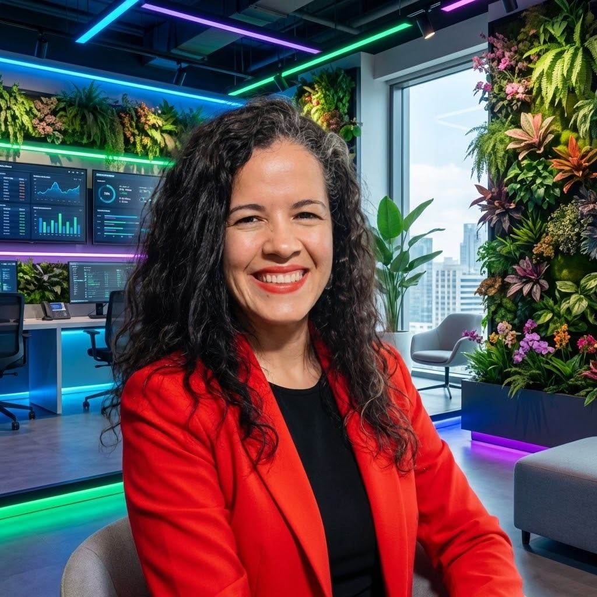

Quality Analyst Consultant | Tech Educator | Speaker
> 15+ anos em TI | Thoughtworks | Women Techmakers Ambassador
Sou uma entusiasta de tecnologia que acredita no poder do software para transformar o mundo. Com 15+ anos de experiência em TI, construí uma carreira sólida e diversa que inclui desenvolvimento de software, business intelligence, ensino e meu papel atual como Quality Analyst Consultant na Thoughtworks.
Minha paixão por garantir a qualidade de software me impulsiona a buscar excelência através de uma abordagem holística. Sou igualmente habilidosa em execução prática — testes exploratórios manuais críticos para garantir qualidade centrada no usuário e construção de automação de testes direcionada.
Além da tecnologia, sou apaixonada por aprender, ensinar e compartilhar conhecimento. Sou Women Techmakers Ambassador e busco inspirar outras pessoas a seguirem seus sonhos na área de tech.
Centro de Informática — Universidade Federal de Pernambuco (CIn-UFPE)
Outubro 2020 — Março 2022
Programa de pós-graduação intensivo com treinamento hands-on em ambiente corporativo real (EMPREL), fazendo a ponte entre conhecimento acadêmico e prática na indústria.
Instituto Reformado de São Paulo
2024 — 2026 (Em andamento)
Programa focado em desenvolvimento de habilidades teóricas e práticas em aconselhamento, com competência-chave em Resolução de Conflitos.
Instituto de Gestão e Tecnologia da Informação (IGTI) — Belo Horizonte
Junho 2017 — Dezembro 2020
Planejamento estratégico de BI, gestão de dados & ETL, análise de dados & insights, visualização e comunicação com stakeholders.
Escola Politécnica — Universidade de Pernambuco (POLI-UPE)
2017 — 2019
Disciplinas cursadas: Requisitos de Software, Engenharia de Software Experimental, Inteligência Computacional.
Faculdade de Tecnologia Ibratec (Unibratec) — Recife
Maio 2015 — Junho 2017
Gestão do ciclo de vida completo do SDLC, metodologias ágeis (Scrum, Kanban), arquitetura de software e garantia de qualidade.
Centro Universitário Maurício de Nassau (UNINASSAU) — Recife
Janeiro 2008 — Dezembro 2011
Análise de sistemas, desenvolvimento de software, gestão de banco de dados e gerenciamento de projetos de TI.
Thoughtworks
Abril 2022 — Presente (4+ anos)
QA Enabler & Quality Specialist
Secretaria de Educação do Estado de Pernambuco — ETE Advogado José David Gil Rodrigues (Noturno)
Julho 2026 — Presente
Curso Técnico Subsequente em Desenvolvimento de Sistemas. Formação voltada ao desenvolvimento de aplicações web, desktop e mobile, com foco em lógica de programação, banco de dados, engenharia de software e práticas de projeto integrador.
Secretaria de Educação do Estado de Pernambuco — ETE Ginásio Pernambucano
Agosto 2021 — Julho 2024 (3 anos)
Ensino presencial de 13 disciplinas técnicas incluindo: Design Centrado no Usuário, Programação Web, Desktop e Mobile, Lógica Computacional, Análise de Dados com Pentaho e Projetos Integradores.
Centro de Informática UFPE — EMPREL
Outubro 2020 — Março 2022
Programa de residência com aplicação prática em projetos reais na EMPREL. Stack: PHP, Doctrine, Symfony, Java, Kotlin, Selenium, JUnit5.
FADE-UFPE — Projeto Samsung (CIn/UFPE)
Dezembro 2018 — Setembro 2019
Criação e execução de testes funcionais, exploratórios, smoke e outline para o projeto Samsung.
SEFAD-Olinda (Alocada)
Junho 2017 — Novembro 2018
ETL, Data Warehouse, modelagem dimensional com Power Architect, cubos OLAP com Pentaho e disponibilização via Saiku/BI Server.
Accenture Brasil
Janeiro 2012 — Janeiro 2016 (4 anos)
Testes SOA com SOAPUI, gestão de defeitos, testes de regressão e integração, liderança de equipe de Reconciliação com 4 pessoas.
TDC Stage Recife + RECnPlay | Thoughtworks Recife
10 de Junho de 2026
Palestra: "E se o QA pudesse ler o Jira, o Confluence e o codigo ao mesmo tempo? Com Kiro, pode."
Palestra sobre como a ferramenta Kiro de IA generativa pode transformar o trabalho do QA, integrando leitura simultanea de multiplas fontes de informacao para acelerar analise e automacao de testes.
Certificado emitido por Yara Mascarenhas Hornos — Diretora Geral do TDC (Globalcode Tecnologia e Eventos)
2026 — Nivel A1 Concluído (80h)
2025 — Alura + FIAP (Thoughtworks)
2025 — Crucial Learning (Thoughtworks)
2024
2025 — Caroli.org
2025 — Alura + FIAP (Thoughtworks)
Dados consolidados do ciclo de performance — Tribo Bolepix (Natura &Co)
Agosto 2023 — Presente
Liderança em comunidade tech feminina através de eventos, palestras, criação de conteúdo e mentoria.
Fevereiro 2020 — Abril 2024
Ensino de análise de dados com Pentaho e suporte ao time com questões de QA e desenvolvimento.
2025 — Recife Expo Center
Mentoria para mulheres em tecnologia durante evento presencial.
Publicado na Amazon
Livro introdutório sobre ETL utilizando Pentaho PDI (Kettle).